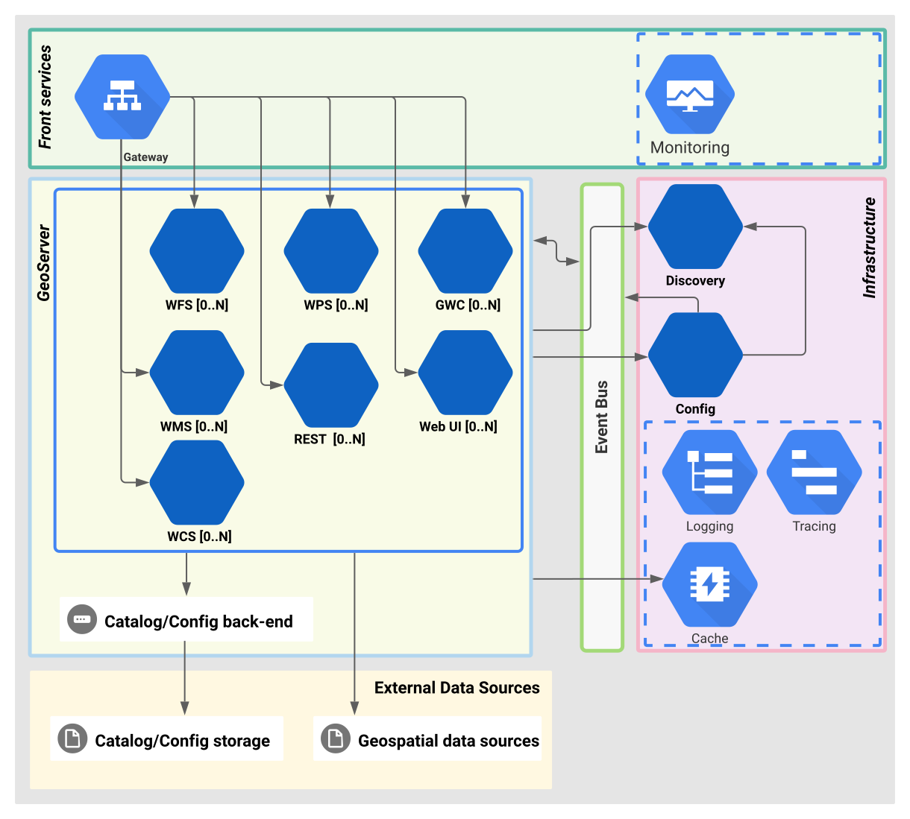

GeoServer Cloud
mit Kubernetes
Nils Bühner, terrestris
FOSSGIS 2024 | 20. März 2024 | Hamburg
Fahrplan
- Vorstellung und Einordnung des Vortrags
- Cloud-Probleme des "klassischen" GeoServer
- Deswegen: GeoServer Cloud
- Deployment am Beispiel Kubernetes (Video-Demo)
Nils Bühner
- Informatiker
- Entwickler bei terrestris
- Maintainer des GeoServer Docker Images
- Interessen und Schwerpunkte
- Java, Python, JavaScript
- GeoServer
- PostgreSQL/PostGIS
- Docker
- CICD/Infrastruktur

Einordnung und Motivation
- Interesse am Thema
- (Noch) kein Power-User
- (Noch) kein Kernentwickler
- Klausurtagung 2023 mit terrestris
- "Bericht" über meine Erfahrungen
GeoServer
- Open Source Server für Geodaten
- Erweiterbar durch Plugins/Extensions
- Monolithische Applikation
- OGC-Standards
- WMS
- WFS
- WPS
- … mehr
- GeoFencing
Monolithischer GeoServer in der Cloud
GeoServer Cloud
- https://github.com/geoserver/geoserver-cloud
- Eigenes Projekt "on top"
- Cloud native & DevOps friendly
- Wiederverwendung bestehender GeoServer Logik
- Entkopplung hin zu individuell skalierbaren Microservices
- Spring (Boot)!
GeoServer Cloud Architektur

Quelle: Github
Microservices
- Web UI
- WMS
- WFS
- WPS
- WCS
- GWC
- REST
Außerdem:
- Front Gateway als "single entry point" und Load Balancer
- Event Bus (RabbitMQ bzw. Spring Cloud Bus)
- Catalog (XML oder JDBC)
Maven pom.xml
4.0.0
org.geoserver.cloud.apps
gs-cloud-services
${revision}
gs-cloud-wms
jar
wms-service
org.geoserver.cloud.wms.app.WmsApplication
org.geoserver.cloud
gs-cloud-starter-webmvc
org.geoserver
gs-gwc
org.geoserver
gs-wms
org.geoserver.cloud
gs-cloud-starter-wms-extensions
org.geoserver.cloud
gs-cloud-starter-security
...
...
Quelle: WMS pom.xml auf github
Java Code (Spring Boot)
@SpringBootApplication
@EnableRetry
public class WmsApplication {
public static void main(String[] args) {
try {
SpringApplication.run(WmsApplication.class, args);
} catch (RuntimeException e) {
try {
LoggerFactory.getLogger(WmsApplication.class).error("Application run failed", e);
} finally {
System.exit(-1);
}
}
}
}
Quelle: WmsApplication.java auf github
Java Code (Spring Web Controller)
package org.geoserver.cloud.wms.controller;
import lombok.NonNull;
import lombok.RequiredArgsConstructor;
import org.geoserver.cloud.virtualservice.VirtualServiceVerifier;
import org.geoserver.ows.Dispatcher;
import org.springframework.stereotype.Controller;
import org.springframework.web.bind.annotation.GetMapping;
import org.springframework.web.bind.annotation.PathVariable;
import org.springframework.web.bind.annotation.PostMapping;
import org.springframework.web.servlet.view.RedirectView;
import javax.servlet.http.HttpServletRequest;
import javax.servlet.http.HttpServletResponse;
@Controller
@RequiredArgsConstructor
public class WMSController {
private final @NonNull Dispatcher geoserverDispatcher;
private final @NonNull org.geoserver.ows.ClasspathPublisher classPathPublisher;
private final @NonNull VirtualServiceVerifier virtualServiceVerifier;
@GetMapping("/")
public RedirectView redirectRootToGetCapabilities() {
return new RedirectView("/wms?SERVICE=WMS&REQUEST=GetCapabilities");
}
@GetMapping(path = {"/wms", "/ows"})
public void handleGet(HttpServletRequest request, HttpServletResponse response)
throws Exception {
dispatch(request, response);
}
private void dispatch(HttpServletRequest request, HttpServletResponse response)
throws Exception {
geoserverDispatcher.handleRequest(request, response);
}
}
Quelle: WMSController.java auf github
WMS Microservice Dockerfile
ARG TAG=latest
FROM geoservercloud/gs-cloud-base-jre:$TAG as builder
ARG JAR_FILE=target/gs-cloud-*-bin.jar
COPY ${JAR_FILE} application.jar
RUN java -Djarmode=layertools -jar application.jar extract
##########
FROM geoservercloud/gs-cloud-base-geoserver-image:$TAG
COPY --from=builder dependencies/ ./
COPY --from=builder snapshot-dependencies/ ./
COPY --from=builder spring-boot-loader/ ./
COPY --from=builder application/ ./
Quelle: WMS Dockerfile auf github
Fazit
- Vorteile
- Native Einbindung in moderne Cloud-Umgebungen
- Skalierbarkeit/Dimensionierung
- Verfügbarkeit ("Service isolation")
- Gute Monitoring und Telemetrie-Unterstützung
- Location transparency
- Mehr Sicherheit durch potenziell kleineren Angriffsvektor
- Nachteile
- Kompatibilität von Erweiterungen
- Komplexeres Setup in Cloud-Umgebung
- bislang überschaubare Dokumentation
Ausblick
- Quelle: Kernentwickler Gabriel Roldan
- GS Cloud Release v1.7.0 (GS 2.25.0)
- Neues config plugin "pgconfig" als hocheffizienter PostgreSQL-Katalog (ersetzt jdbconfig bzw. file-based XML catalog)
- GeoServer ACL (Access Control List) statt GeoFence
- GS Cloud kompatibel
- skalierbarer Microservice
- eigene REST-API
- OpenAPI -> Code-Generierung für Clients
Kubernetes in Docker (KIND)
- Kubernetes: Open-Source-System zur Verwaltung einer Container-Infrastruktur
- https://github.com/terrestris/kind-dev-cluster
- Lokaler Kubernetes Cluster
- "Spielwiese"
- Vorinstalliert:
- ingress-nginx
- Kubernetes Dashboard
- Installation von GeoServer cloud via helm chart
Zum Schluss: Video-Demo
- Lokalen Kubernetes Cluster starten
- Login ins Dashboard
- Installation von GeoServer Cloud
- Anpassung auf "Nur WMS"